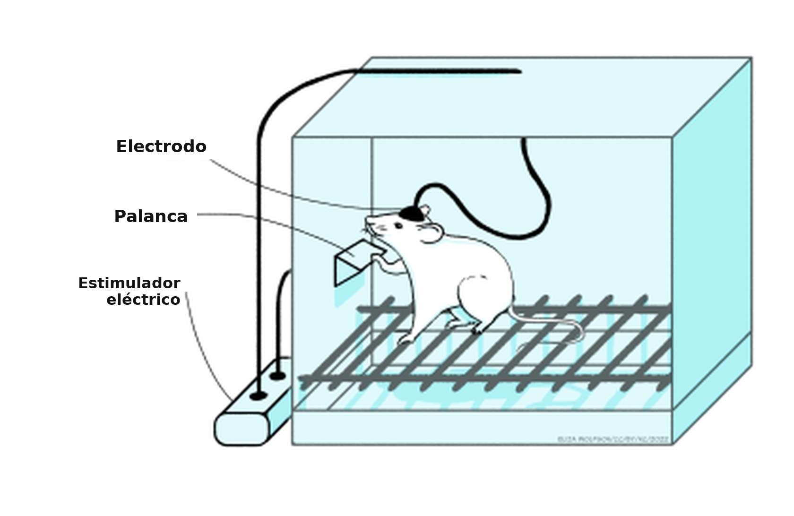
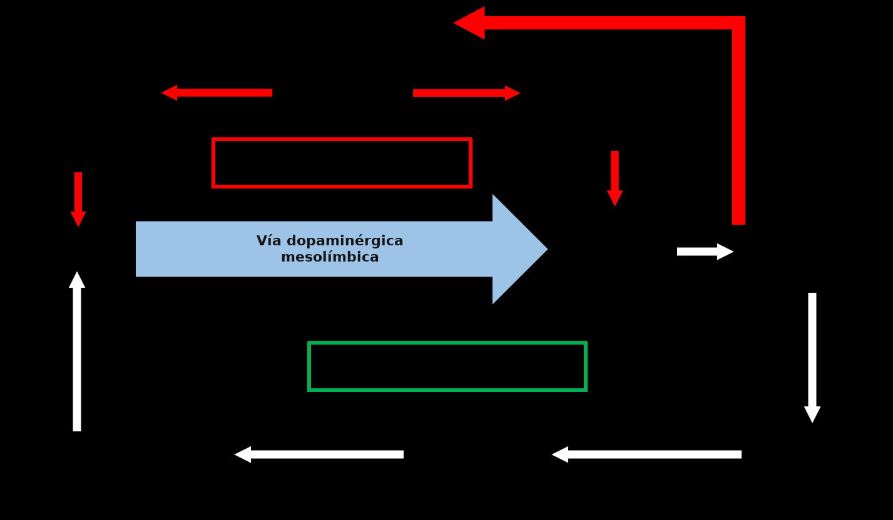
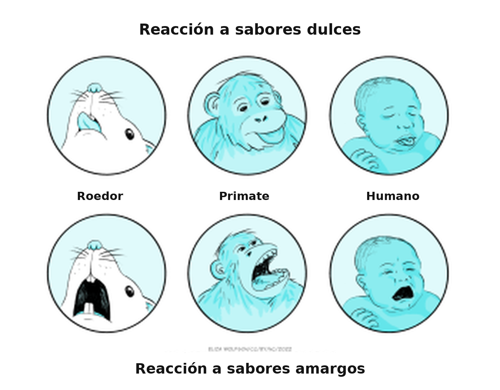

Adicción
Objetivos de aprendizaje
- Apreciar las características de la recompensa y del reforzamiento.
- Comprender cómo los efectos de las drogas sobre las conductas reforzadas señalan un papel crítico de la dopamina.
- Comprender cómo las drogas de abuso afectan la transmisión dopaminérgica mesolímbica.
- Apreciar el vínculo entre la autoadministración de drogas y la dependencia (adicción).
¿Qué es la adicción?
La adicción a las drogas, o, con el término más científico, la dependencia, es el consumo de una sustancia química (la droga) por motivos que no son nutricionales ni médicos, cuando esa conducta de consumo es compulsiva. Una persona con adicción siente que no controla el consumo, sino que se siente impulsada a consumir. Su vida suele organizarse alrededor de conseguir y consumir la droga, en detrimento de conductas necesarias para la supervivencia, por ejemplo comer o beber agua. A menudo incurre en conductas riesgosas o ilegales para sostener el hábito. Con frecuencia desarrolla tolerancia a la droga, de modo que necesita más cantidad para producir el «high», el efecto eufórico. Hay que distinguir la dependencia del consumo y del abuso. El consumo es la toma de la sustancia en cantidades pequeñas, relativamente poco frecuentes y, sobre todo, sin daño para las relaciones ni para el funcionamiento cotidiano. Por ejemplo, muchas personas disfrutan una copa de vino con la comida, o un trago con amistades. Si el consumo escala a una toma frecuente o excesiva, que altera el funcionamiento cotidiano o las relaciones, pero sin compulsión, se habla de abuso. La dependencia, como se dijo, se parece al abuso, salvo que el consumo es compulsivo y la persona siente que no controla si va a tomar la droga.
Hay cuatro etapas principales de la adicción a las drogas: inicio, mantenimiento, abstinencia y recaída. Es probable que cada una esté impulsada por mecanismos distintos. El inicio es la primera etapa, cuando la persona toma la droga por primera vez. Los factores principales que influyen en el inicio son la sensación «placentera» (el impacto hedónico) de tomar la droga, la superación del estrés, la presión de los pares y el deseo de adaptarse a un grupo, o simplemente la experimentación. Para muchas personas, el consumo no pasa de esta etapa, y tomar o no una droga es por completo una decisión consciente.
Sin embargo, cuando el consumo se vuelve dependencia, se pasa a la segunda etapa: el mantenimiento. Aquí la persona ya no siente que controla la decisión de tomar una droga, sino que siente una compulsión a tomarla. El mantenimiento puede durar mucho y muy a menudo se acompaña de un impulso motivacional creciente a tomar la droga, impulsado por un proceso llamado sensibilización (véase el recuadro «Tolerancia y sensibilización», más abajo). En cambio, rara vez aumenta al mismo tiempo el impacto hedónico de tomar la droga. De hecho, muy a menudo el impacto hedónico disminuye, y las drogas incluso pueden volverse aversivas.
Tolerancia y sensibilización
Son formas de neuroadaptación importantes en muchos aspectos de la función neuronal, y son particularmente importantes para entender los procesos de la adicción a las drogas.
La tolerancia es el proceso por el cual una droga se vuelve menos eficaz: produce una respuesta más débil después de administraciones repetidas. La sensibilización, en cambio, es el proceso por el cual la droga se vuelve más eficaz con las administraciones repetidas.
Ambos procesos están mediados por cambios en la función celular, entre ellos:
- cambios en la síntesis, el almacenamiento y la liberación de neurotransmisores;
- cambios en la densidad de receptores;
- cambios en la recaptación y el metabolismo de los transmisores;
- cambios en la señalización por segundos mensajeros.
Muchos de esos cambios probablemente implican una regulación al alza o a la baja de la expresión de genes específicos.
Sin embargo, por ahora no se comprende del todo cómo se controlan estos mecanismos. Es interesante que los procesos de la sensibilización sean muy duraderos. Algunas personas incluso sugirieron que pueden ser irreversibles, y que así explicarían los cambios persistentes que sostienen el mantenimiento de la adicción. También se propuso un vínculo con los mecanismos del aprendizaje, porque los antagonistas de los receptores de glutamato de tipo NMDA, administrados en el área tegmental ventral (ATV), impiden la sensibilización. Se sabe que los receptores NMDA participan de manera crítica en los mecanismos de neuroplasticidad del aprendizaje, y esta evidencia sugiere que procesos similares, que involucran receptores NMDA, pueden sostener la sensibilización inducida por drogas.
Una vez que una persona se volvió dependiente, es probable que la adicción la acompañe el resto de la vida: hay poca evidencia de una recuperación verdadera. Por eso, cuando una persona con adicción se abstiene de tomar una droga, en general no se considera que esté «curada» o «recuperada», sino abstinente. Eso refleja la idea de que la adicción sigue presente, pero no se expresa porque la persona ya no toma la droga. Sin embargo, el impulso motivacional a tomarla, es decir el deseo intenso de consumo, puede seguir siendo fuerte. Lo subraya la evidencia de que los cambios fisiológicos y neuroquímicos que ocurren en el encéfalo con el desarrollo de la dependencia son en gran medida irreversibles, como se verá más adelante. Por eso, las personas abstinentes son muy propensas a retomar el consumo, lo que se llama recaída. Una sola toma puede reinstaurar la fase de mantenimiento en una persona que puede haber estado abstinente durante muchos años. De ahí la exigencia, en los programas de tratamiento de la dependencia, de que la persona no vuelva a tomar la droga. La recaída está impulsada por el deseo intenso de consumo, que puede desencadenarse por el estrés o por la exposición a personas, objetos o situaciones asociados con el consumo previo. Eso subraya el vínculo entre el condicionamiento clásico y el consumo de drogas.
Cuando una persona con adicción deja de tomar una droga, a menudo tiene síntomas de abstinencia. Son cambios conductuales, con frecuencia opuestos a los efectos de la droga, y pueden ser muy aversivos. En las primeras etapas de la abstinencia, esos síntomas son particularmente intensos y pueden ser extremadamente desagradables. Así, evitar los síntomas de abstinencia es una motivación fuerte para tomar la droga y puede llevar a la recaída. Sin embargo, a medida que se alarga la abstinencia, los síntomas ceden, y esa motivación para la reinstauración se reduce.
Circuitos encefálicos de la motivación y adicción
Se hicieron muchos estudios en animales de experimentación, en particular ratas y ratones, pero también primates, para investigar los circuitos neurales que sostienen la adicción. En su mayoría se centran en las vías que controlan el reforzamiento y la motivación, a menudo llamadas vía de la recompensa.
¿Recompensa o reforzamiento?
La recompensa es un término muy usado al hablar de la señalización dopaminérgica en la vía mesolímbica. De hecho, muchas publicaciones llaman a la vía mesolímbica «vía de la recompensa». Sin embargo, el término «recompensa» plantea varios problemas en el contexto científico. La recompensa es una experiencia placentera y es subjetiva: lo que es placentero para una persona puede no serlo para otra. También plantea problemas para evaluar el placer en animales de experimentación: ¿cómo sabemos que un animal está disfrutando una experiencia? En tercer lugar, el término no implica necesariamente que vaya a cambiar la conducta.
En términos científicos, para la investigación empírica, conviene evitar las medidas subjetivas: es mucho mejor contar con medidas objetivas. El término reforzamiento se refiere a la capacidad de un estímulo, una situación o un resultado de desencadenar una conducta. El reforzamiento fortalece la conducta futura del animal ante la exposición al estímulo. Es una medida objetiva: basta con medir los cambios en la conducta, por ejemplo el número de presiones operantes de la palanca. Además, el reforzamiento no implica placer, de modo que, al medir la conducta, no hace falta preocuparse por si el animal está disfrutando la experiencia.
El descubrimiento de Olds y Milner (1956), de que las ratas trabajaban presionando una palanca para recibir una estimulación eléctrica leve en un área específica del encéfalo, impulsó grandes programas de investigación sobre esta vía y otras relacionadas en el control de la motivación. Observaron que las ratas estaban motivadas a estimular eléctricamente áreas de la vía mesolímbica: esta vía proyecta desde los cuerpos celulares del área tegmental ventral (ATV), a lo largo de los axones de la vía mesolímbica, hasta terminales situadas sobre todo en el núcleo accumbens.

Los experimentos posteriores caracterizaron con más detalle el mecanismo que promueve la respuesta de presión de la palanca y, sobre todo, subrayaron el papel crítico de la dopamina en el efecto conductual. Así, la anfetamina o la cocaína, que aumentan la señalización dopaminérgica, incrementan la tasa de presión de la palanca, mientras que administrar un antagonista dopaminérgico la reduce. Eso indica que la señal de reforzamiento que impulsa la conducta de presión de la palanca está mediada por la dopamina. Es importante notar que la localización anatómica de las regiones encefálicas que sostienen la autoestimulación es muy específica: si los electrodos quedan fuera de esas regiones localizadas, los animales no se autoestimulan. Un punto interesante, en relación con los fenómenos de la adicción, es que en experimentos de autoestimulación como estos los animales presionan la palanca de forma repetida para recibir la estimulación en lugar de comer o beber. Eso indica que la estimulación eléctrica es un impulso motivacional muy fuerte, que suprime el impulso de realizar conductas críticas para la supervivencia: las personas con adicción a menudo descuidan la nutrición habitual y el autocuidado para mantener el consumo de la droga.
Con un procedimiento similar, las ratas y los ratones también presionan una palanca para recibir inyecciones de ciertas drogas. En su forma más simple, las drogas se administran por vía intravenosa (i.v.), a través de una cánula permanente en un vaso sanguíneo: por lo tanto, la presión de la palanca produce una inyección i.v. de la droga. En una modificación del diseño, las drogas pueden administrarse mediante una microinyección en áreas encefálicas locales. Hay varias drogas que los animales se administran por vía intravenosa, entre ellas la anfetamina, la cocaína, la nicotina, la morfina, la heroína y el etanol, y también se administran anfetamina o cocaína en el núcleo accumbens y morfina en el ATV. Hay que subrayar que los animales solo se autoadministran ciertas drogas: la gran mayoría de las drogas no sostiene la autoadministración. Del mismo modo, las regiones encefálicas en las que los animales se autoadministran las drogas, el ATV y el núcleo accumbens, son muy específicas e indican la importancia de la vía mesolímbica.
La importancia del sistema dopaminérgico mesolímbico puede confirmarse con experimentos de lesión, usando 6-hidroxidopamina (6-OHDA), una droga que mata de forma específica las células que contienen catecolaminas (dopamina y noradrenalina). Después de lesiones de la vía mesolímbica, pero no de otras vías, los animales ya no se autoadministran drogas. Además, aumentar la función dopaminérgica mediante inyecciones locales de cocaína o anfetamina en el núcleo accumbens también aumenta la presión de la palanca, lo que apoya el papel de la dopamina en esa respuesta. Paradójicamente, muchos experimentos mostraron que los antagonistas dopaminérgicos también aumentan la tasa de presión de la palanca. Sin embargo, después se encontró que la dosis era crítica: con dosis bajas la tasa aumenta, pero con dosis más altas se abolía por completo. Esta dependencia de la dosis puede explicarse si se considera que, con dosis bajas del antagonista, no todos los receptores están ocupados y, por lo tanto, aumentar la cantidad de droga autoadministrada supera el efecto del antagonista, mientras que con dosis altas los receptores quedan completamente bloqueados y, por más droga que se administre, el efecto del antagonista no puede superarse. Así se concluye que los efectos motivacionales de estas drogas están mediados por neuronas dopaminérgicas de la vía mesolímbica.
Recordá que el estrés es un factor importante en el desarrollo de la dependencia y en la recaída de las personas abstinentes con adicción, y que la influencia del estrés puede verse en animales entrenados para autoadministrarse. Si las ratas que antes fueron entrenadas a presionar la palanca para autoadministrarse cocaína se dejan sin droga durante varias semanas, ya no presionan la palanca cuando la cocaína vuelve a estar disponible, lo que modela la abstinencia. Si después reciben una descarga en la pata, vuelven a presionar la palanca, reinstauran la autoadministración compulsiva y así reproducen el efecto del estrés sobre la recaída en las personas. En el contexto del papel del estrés en la reinstauración, es notable que esta reinstauración se impide con antagonistas de la hormona liberadora de corticotropina, lo que subraya el papel de la respuesta de estrés mediada por el eje hipotálamo-hipófiso-adrenal.
Medir la conducta operante de los roedores, como la presión de la palanca, es una buena forma de medir su nivel de motivación y, como vimos en los experimentos anteriores, muestran una motivación fuerte para recibir estímulos que activan la vía dopaminérgica mesolímbica. Sin embargo, se trata claramente de conductas muy artificiales: no imitan actividades que los animales realizan de forma natural. Basta mirar en la naturaleza cuánto esfuerzo ponen los animales en conseguir alimento, ya sea un predador que persigue una presa o las migraciones anuales hacia nuevas zonas de alimentación. Los animales tienen una motivación innata a buscar conductas beneficiosas para la supervivencia, por ejemplo comer, beber y reproducirse. Por eso, los sistemas motivacionales del encéfalo evolucionaron mucho para reforzar conductas que mejoran la capacidad de los animales de realizar esas acciones. Los estímulos asociados con esas acciones se vuelven predictores fuertes del resultado y claves motivacionales fuertes para realizar las conductas que llevan al consumo.
En el laboratorio también puede demostrarse la motivación para buscar conductas beneficiosas: las observaciones iniciales de B. F. Skinner en la década de 1940 abrieron el camino a muchos experimentos operantes posteriores, en los que ratas o ratones presionaban una palanca para recibir alimento, agua o incluso una pareja sexualmente receptiva. Además, como en la autoestimulación y la autoadministración, los experimentos de lesión y de farmacología mostraron la importancia de la dopamina de la vía mesolímbica para controlar esta conducta. Así, la presión de la palanca para recibir una recompensa natural (alimento, agua) queda abolida en animales con lesiones por 6-OHDA de la vía mesolímbica, o por la aplicación de antagonistas de los receptores de dopamina, y aumenta con la administración de anfetamina o cocaína. Entonces, la vía mesolímbica participa claramente en la motivación para emprender conductas vitales para la supervivencia, y la autoestimulación y la autoadministración se apoyan en ese mecanismo al promover la actividad de la vía, ya sea de forma electrofisiológica o farmacológica.
La medición neuroquímica directa en áreas encefálicas localizadas, sobre todo con microdiálisis encefálica o voltametría cíclica de barrido rápido (FSCV) (véase el recuadro «Medición de la liberación de neurotransmisores en el encéfalo», más abajo), mostró que la liberación de dopamina en el núcleo accumbens, pero no en otras regiones terminales dopaminérgicas del encéfalo, aumenta durante las conductas apetitivas. Esas conductas incluyen comer y beber, y también la estimulación eléctrica del ATV, similar a la usada en la autoestimulación, lo que confirma en gran medida la importancia de la dopamina en los procesos de motivación. Además, las drogas que sostienen la autoadministración también aumentan la liberación de dopamina en el núcleo accumbens de forma preferente respecto de otras regiones. Los mecanismos por los cuales las distintas drogas aumentan la función dopaminérgica mesolímbica varían según el tipo de droga. Algunas, como la nicotina, la morfina, la heroína y el alcohol, activan la vía por acciones directas o indirectas sobre las dendritas y el cuerpo celular en el ATV, mientras que otras, como la anfetamina y la cocaína, afectan la recaptación de la dopamina liberada en las regiones terminales, incluido el núcleo accumbens.
Considerar el sitio de acción de las distintas drogas explica por qué los animales se autoadministran morfina en el ATV y anfetamina y cocaína en el núcleo accumbens: esas son las regiones en las que las drogas respectivas activan la función mesolímbica. Por lo tanto, aunque las drogas adictivas muestran una farmacología primaria muy distinta —solo la anfetamina y la cocaína actúan de forma directa sobre el sistema dopaminérgico— y también tienen efectos conductuales primarios muy distintos (Tabla 1), todas comparten la capacidad de aumentar la función dopaminérgica de forma selectiva en la vía mesolímbica, y se cree que esa acción sostiene sus efectos motivacionales. Las drogas «secuestran» la vía neural del encéfalo que controla la motivación de los animales a buscar conductas esenciales para la supervivencia y, en cambio, motivan al individuo a realizar conductas relacionadas con el consumo de las drogas.
Medición de la liberación de neurotransmisores en el encéfalo
Medir la liberación de neurotransmisores en áreas encefálicas localizadas durante la conducta, o en respuesta a drogas, es realmente importante para entender las acciones de los neurotransmisores que la sostienen. En las últimas décadas se usaron dos métodos principales, y ambos pueden usarse en animales de experimentación despiertos y en libre movimiento.
La microdiálisis encefálica consiste en implantar un tramo corto de membrana de diálisis en el encéfalo y perfundirlo de forma continua con líquido cefalorraquídeo artificial (aCSF). Las sustancias disueltas en el líquido extracelular encefálico atraviesan la membrana, por diálisis, hacia el aCSF, y suelen medirse por cromatografía líquida de alta resolución (HPLC). En segundo lugar, la voltametría cíclica de barrido rápido (FSCV) mide la oxidación de sustancias químicas cuando se aplica un voltaje a un microelectrodo de fibra de carbono. Aunque es posible medir algunos otros compuestos neuroactivos, el uso más extendido de la FSCV es medir dopamina. La microdiálisis tiene la ventaja de que pueden medirse muchos compuestos distintos en una sola muestra, mientras que la FSCV se limita sobre todo a un solo compuesto, normalmente dopamina. Sin embargo, las sondas de microdiálisis son comparativamente grandes (por lo general de 1 a 2 mm de largo y 0,5 mm de diámetro) y, por lo tanto, tienen una resolución espacial relativamente pobre. La FSCV, en cambio, usa microelectrodos de fibra de carbono mucho más pequeños (por lo general de 100 µm de largo y 10 µm de diámetro), que dan una resolución espacial mucho mayor y permiten apuntar a subregiones encefálicas más pequeñas. La microdiálisis también tiene una resolución temporal relativamente pobre, porque exige recoger muestra suficiente para poder analizarla: la mayoría de los estudios usa tiempos de recolección de 1 a 10 minutos, aunque algunos lograron menos de un minuto. En contraste, la FSCV suele hacer 10 mediciones por segundo. Por eso la FSCV puede captar cambios transitorios rápidos en respuesta a estímulos específicos, mientras que la microdiálisis solo puede captar cambios más lentos y sostenidos.
Los avances recientes con marcadores genéticos están abriendo el camino a enfoques nuevos para medir muchos aspectos de la función de los neurotransmisores con alta especificidad química y alta resolución espacial y temporal.

La preferencia de lugar condicionada evalúa la preferencia de un animal por un entorno asociado con un reforzador, y puede evaluarse con una caja de prueba de dos compartimentos. Los animales se entrenan, a lo largo de sesiones repetidas, en que un compartimento contiene un reforzador (por lo general alimento, sacarosa o agua), mientras que el otro no. Después de varios ensayos de entrenamiento, la preferencia de lugar se evalúa en ausencia de cualquier reforzador (es decir, ambos compartimentos están vacíos). El animal se vuelve a colocar en la caja de prueba y se registra el tiempo que pasa en cada compartimento. Los animales pasan más tiempo en el compartimento antes reforzado que en el de control, aunque en la prueba no haya reforzador.
Esto muestra que el animal aprendió qué compartimento de la caja de prueba contenía el reforzador, y que está motivado a visitar ese compartimento con preferencia al de control, incluso cuando el reforzador ya no está presente. Este efecto:
- queda abolido con lesiones por 6-OHDA de la vía mesolímbica;
- aumenta con drogas que incrementan la dopamina, como la anfetamina y la cocaína; y
- se atenúa con antagonistas de los receptores de dopamina.
Por lo tanto, la vía dopaminérgica mesolímbica es crítica para la expresión de la preferencia de lugar condicionada.
En una variante del procedimiento, en lugar de un reforzador natural pueden usarse drogas. En este caso, durante el entrenamiento, al animal se le da una inyección de una droga y se lo coloca en un compartimento, o una inyección de solución salina y se lo coloca en el otro. En la prueba, sin droga presente, muestran preferencia por el compartimento en el que antes recibieron la droga. Las drogas que inducen preferencia de lugar, entre ellas la anfetamina, la cocaína, la morfina, la heroína y el alcohol, son las mismas que los animales se autoadministran, y todas son drogas potencialmente adictivas en las personas. Un aspecto importante que demuestran los experimentos de preferencia de lugar es que los animales aprenden sobre el entorno en el que reciben estímulos reforzantes, ya sean reforzadores naturales o drogas reforzantes y, si pueden elegir, vuelven a ese entorno incluso cuando el reforzador no está presente. Eso indica que ocurre un aprendizaje asociativo, o condicionamiento, entre el reforzador y el entorno. Un aprendizaje similar también puede demostrarse con claves específicas: en los experimentos de presión de palanca descritos arriba, si un estímulo neutro (por ejemplo, una luz) se presenta inmediatamente antes de que la palanca esté disponible, los animales se acercan a la palanca cuando el estímulo luminoso se presenta solo, e intentan presionarla aunque siga retraída y no disponible.
Los experimentos de microdiálisis y de FSCV mostraron que, una vez que ocurrió este aprendizaje, la liberación de dopamina en el núcleo accumbens aumenta durante la presentación del estímulo luminoso, incluso mucho después de retirar el reforzador. Por lo tanto, los animales aprenden a asociar claves específicas y el entorno con el reforzador, de modo que pueden evocar tanto la liberación de dopamina en el núcleo accumbens como la conducta reforzada, incluso en ausencia del reforzador. Estas conductas en animales de experimentación se parecen mucho a las que se ven en personas con adicción a las drogas, en las que las claves asociadas con el consumo (por ejemplo, una botella vacía de vodka para una persona con alcoholismo, o una aguja para una persona con adicción a la heroína), o el entorno que asocian con el consumo, pueden ser impulsores motivacionales muy fuertes, o deseos intensos de consumo, para tomar las drogas. Es interesante que estos efectos condicionados pueden durar mucho más que el período de asociación, tanto en animales de experimentación como en personas con adicción: así, las claves o el entorno pueden desencadenar deseo intenso de consumo en personas abstinentes incluso años después de la última toma.
En las etapas tempranas, el consumo de drogas no es adictivo: es decir, las personas toman las drogas por elección. Varios factores psicológicos que se originan en la corteza prefrontal, entre ellos la impulsividad y el autocontrol inhibitorio, se mostraron como factores de vulnerabilidad para el consumo de drogas. Así, la desregulación del control prefrontal sobre los circuitos mesolímbicos puede sostener el deterioro del autocontrol inhibitorio que muestran muchas personas con adicción, mientras que una impulsividad alta, mediada por alteraciones del área orbitofrontal de la corteza prefrontal, puede explicar que las personas elijan la gratificación a corto plazo del consumo por encima de los beneficios a largo plazo de la abstinencia.
Sin embargo, en algún momento hay un cambio del consumo o del abuso al consumo compulsivo de drogas característico de la dependencia. Como se mencionó antes, este cambio incluye procesos neuroadaptativos que involucran la sensibilización de los sistemas dopaminérgicos que controlan la motivación, y parece ser en gran medida irreversible, lo que explica los deseos intensos de consumo duraderos incluso después de períodos largos de abstinencia. Además, la evidencia mostró que hay un componente aprendido en este proceso: los animales de experimentación tienen más probabilidad de mostrar sensibilización (por ejemplo, sensibilización de la actividad locomotora, mediada por la actividad dopaminérgica mesolímbica) si se los evalúa en el mismo entorno en el que ocurrió la administración inicial de la droga. Además, una sensibilización previa facilita la adquisición de la autoadministración y de la preferencia de lugar, efectos mediados por la dopamina mesolímbica. Con la administración repetida, las drogas pueden adquirir un valor de incentivo cada vez mayor y volverse cada vez más capaces de controlar la conducta. Esto puede ser paralelo a la observación, en personas con adicción, de que los lugares, los actos o los objetos asociados con el consumo se vuelven incentivos especialmente poderosos.
Las drogas adictivas producen cambios duraderos en la organización del encéfalo. Los sistemas encefálicos que se sensibilizan incluyen la vía dopaminérgica mesolímbica, responsable de la saliencia incentiva («deseo») de la droga o de las claves asociadas con la droga. Los sistemas que median los efectos placenteros o eufóricos de la droga («agrado») no se sensibilizan. Los estudios en animales examinaron los mecanismos de la sensibilización al consumo repetido de drogas. Los psicoestimulantes, entre ellos la anfetamina y la cocaína, causan un aumento de la actividad locomotora en roedores, un efecto mediado por la vía mesolímbica: las lesiones de la vía mesolímbica lo suprimen. Con la administración sistémica repetida (es decir, intravenosa, intraperitoneal o subcutánea, cuando la droga accede a todo el encéfalo), la hiperlocomoción inducida por la droga aumenta, lo que muestra una respuesta sensibilizada. El mecanismo preciso de la sensibilización no es seguro, pero probablemente involucra cambios neuroadaptativos a largo plazo y duraderos en la región de los cuerpos celulares del ATV (véase el recuadro de abajo).
Localización de la neuroadaptación que sostiene la sensibilización
A las ratas se les dieron inyecciones locales repetidas de anfetamina, ya sea en la región de los cuerpos celulares de la vía mesolímbica, en el ATV, o en la región terminal, en el núcleo accumbens. Un tercer grupo de control no recibió inyecciones.
Los animales inyectados en el núcleo accumbens mostraron una respuesta hiperlocomotora que no aumentó con las inyecciones repetidas: es decir, no hubo sensibilización. Los animales que recibieron inyecciones en el ATV no mostraron respuesta conductual. Esto no sorprende, porque el efecto farmacológico de la anfetamina está en las terminales: aumenta la liberación y bloquea la recaptación. Por lo tanto, es probable que sea más eficaz en la región terminal. Después de estas inyecciones locales repetidas, los animales se dejaron una semana sin droga y luego recibieron una dosis de desafío de anfetamina por vía sistémica. Todos los animales mostraron hiperlocomoción. Los que habían recibido inyecciones repetidas de la droga en el núcleo accumbens mostraron un nivel de hiperlocomoción similar al de los controles no inyectados: es decir, no hubo sensibilización. En cambio, los que habían recibido la droga en el ATV mostraron una respuesta aumentada respecto de los otros grupos, lo que indica que había ocurrido sensibilización.
Por lo tanto, la inyección repetida en el núcleo accumbens evocó una respuesta conductual, pero no sensibilización, mientras que la inyección repetida en el ATV no produjo respuesta conductual, pero sí causó sensibilización. Eso aporta evidencia del papel crítico del ATV en la sensibilización.
En resumen, hay evidencia fuerte, a partir de estudios en animales de experimentación, de que:
- la señalización dopaminérgica en la vía mesolímbica impulsa los sistemas motivacionales para promover conductas críticas para la supervivencia;
- las drogas adictivas inciden en este sistema para promover conductas asociadas con la búsqueda y el consumo de la droga;
- la neuroadaptación en esta vía da cuenta de la naturaleza duradera y a largo plazo de la dependencia, y
- la actividad en esta vía, impulsada por asociaciones condicionadas, puede causar deseo intenso de consumo de la droga incluso después de períodos largos de abstinencia.
Por lo tanto, la actividad en esta vía puede dar cuenta de muchos de los fenómenos asociados con la adicción en las personas.
Modelos de la adicción
Se propusieron varios modelos para dar cuenta de las características de la adicción. Entre los más destacados está el modelo de sensibilización incentiva, propuesto por Robinson y Berridge en 1993. Desarrolla ideas tomadas de otros dos modelos prominentes, el modelo del proceso oponente y el modelo del aprendizaje aberrante, y conviene considerar primero, de forma breve, esos dos modelos.
Modelo del aprendizaje aberrante
Según el modelo del aprendizaje aberrante, con el consumo de drogas se asocia un aprendizaje anormalmente fuerte, a través de dos componentes distintos del aprendizaje. Primero, el aprendizaje explícito, en el que la asociación entre la acción (consumir la droga) y el resultado (el efecto de la droga) se fortalece de forma anormal y lleva al consumo por la expectativa del impacto hedónico, incluso cuando la droga ya no produce ese efecto. Segundo, el aprendizaje implícito, en el que las relaciones acción-resultado (como las de arriba) pasan a una relación estímulo-respuesta más automática (un hábito), de modo que el estímulo evoca la respuesta con independencia de cualquier expectativa consciente sobre el resultado.
Si bien esta teoría da cuenta del impulso motivacional que proviene de los estímulos asociados con el consumo y de la capacidad de esos estímulos de promover el deseo intenso de consumo, no da cuenta de que la mayoría de las personas con adicción no informa una expectativa de un efecto hedónico positivo. Por lo tanto, parece poco probable que esa expectativa sea la motivación de la búsqueda y el consumo. Del mismo modo, no explica la naturaleza compulsiva de la adicción: implica que la búsqueda y el consumo son conductas puramente automáticas, cuando en los hechos aparecen más como una compulsión motivacional. Por último, no explica la flexibilidad conductual que muestran las personas con adicción. La teoría predeciría que, si se impidiera la vía habitual de consumo, la persona no podría adaptar la conducta para buscar la droga en otra fuente o por otro proceso, cuando en los hechos sí muestran una flexibilidad conductual considerable en esas circunstancias.
Modelo del proceso oponente
El modelo del proceso oponente está bien fundado en la neurociencia, como mecanismo de control homeostático de muchas funciones. Postula dos procesos, el proceso A y el proceso B, que se oponen: el proceso A se activa por un estímulo externo y produce un cambio en el funcionamiento, y el proceso B es la reacción del cuerpo al cambio producido por el proceso A para volver al punto de ajuste. En el contexto del consumo de drogas, el proceso A representa el efecto directo de la droga, que dispara el proceso B, el proceso oponente, cuyo fin es restaurar el estado homeostático. El proceso A lleva al estado hedónico (el «high») asociado con tomar una droga, mientras que el proceso B lleva a la aversión por no tomarla, por ejemplo los síntomas de abstinencia. Con el consumo repetido se acumula tolerancia al proceso A, lo que da cuenta del menor impacto hedónico de las drogas, mientras que el proceso B se fortalece y produce síntomas de abstinencia que solo pueden eliminarse tomando más droga. Así, la fuerza que impulsa el consumo es evitar los síntomas de abstinencia aversivos que ocurren cuando el proceso A disminuye, pero el B no. Así, las personas que al principio toman drogas para obtener un estado hedónico positivo después se motivan a seguir consumiendo para evitar un estado hedónico negativo.
Esto da cuenta del impulso a tomar la droga para alcanzar un estado homeostático, pero no da cuenta de la evidencia de que evitar el estado hedónico negativo de la abstinencia no es un motivador principal del consumo. De hecho, muchas drogas adictivas no evocan síntomas de abstinencia intensos. Además, los síntomas de abstinencia son máximos en los días que siguen al cese del consumo, y sin embargo el deseo intenso de la droga, y la reinstauración, incluso después de una dosis pequeña, pueden durar años: en personas con alcoholismo que estuvieron abstinentes durante años, una sola bebida alcohólica puede reinstaurar la conducta adictiva.
Modelo de sensibilización incentiva
El modelo de sensibilización incentiva deriva ciertos aspectos de los modelos anteriores, pero los sitúa en un marco motivacional. Distingue dos componentes distintos del reforzamiento —el impacto hedónico («agrado») y la saliencia incentiva («deseo»)—, que son disociables en lo conductual y en lo fisiológico. Robinson y Berridge usan los términos «agrado» (liking) y «deseo» (wanting), entre comillas, para representar estos parámetros conductuales definidos con mucha claridad. Así, cuando aparecen entre comillas, representan términos científicos mucho más específicos que el uso cotidiano de las dos palabras. El aprendizaje de incentivo, tanto explícito como implícito, que forma el núcleo del modelo del aprendizaje aberrante, proporciona la vía por la cual los estímulos asociados con la conducta adquieren saliencia incentiva: se vuelven salientes, atractivos y deseados, y guían la conducta.
El modelo de sensibilización incentiva se centra en cómo las claves de la droga disparan una motivación excesiva por las drogas, que impulsa la conducta de búsqueda y de consumo. El placer subjetivo derivado de tomar la droga, el impacto hedónico o «agrado», se debe a la acción psicofarmacológica directa de la droga al producir un «high», reducir la ansiedad social o aumentar la socialización. La saliencia incentiva, o «deseo», en cambio, representa la importancia motivacional de los estímulos: hace que estímulos que de otro modo carecerían de importancia puedan atraer la atención, los vuelve atractivos y «deseados». El rasgo crítico del modelo es la disociación entre estos dos procesos, tanto en lo conductual como en lo fisiológico, y que la saliencia incentiva, o «deseo», se sensibiliza con el consumo repetido, de modo que aumenta la fuerza que impulsa a tomar drogas, mientras que el impacto hedónico, o «agrado», no se afecta, o incluso puede reducirse, por tolerancia. En las condiciones normales de la recompensa natural, los dos procesos trabajan juntos para motivar conductas beneficiosas para la supervivencia. Solo en situaciones no naturales, como el consumo de drogas adictivas, hay una disociación entre las acciones de los dos sistemas, de modo que las drogas pueden volverse motivadores excepcionalmente fuertes de la conducta de búsqueda y de consumo. Esta disociación de los dos componentes da cuenta de la observación de que las personas con adicción siguen buscando y tomando drogas incluso cuando obtienen poco o ningún placer de hacerlo, y cuando son plenamente conscientes del daño físico, emocional y social que están causando. Es importante que la disociación entre el «deseo» y el «agrado» también se demostró de forma experimental, lo que indica que no es solo un concepto teórico, sino que ocurre de verdad.
La disociación entre el «deseo» y el «agrado»
En una serie de experimentos diseñados para poner a prueba si podía demostrarse de forma experimental una disociación entre el «deseo» y el «agrado», Berridge y colaboradores idearon un esquema de puntuación para medir expresiones faciales relacionadas con la palatabilidad en varias especies, y con él evaluaron el «agrado» (Figura 6.3). Se mostró que la anfetamina no tenía efecto sobre el «agrado», y que quizá aumentaba la aversión.
Para evaluar el «deseo» se usó, en los mismos animales, un experimento de presión de palanca. Primero se entrenó a los animales a presionar una palanca para obtener una recompensa de sacarosa, y después se los entrenó en que un estímulo auditivo señalaba que la presión de la palanca iba a entregar sacarosa (EC+), pero que un estímulo auditivo distinto señalaba que la presión de la palanca no iba a entregar sacarosa (EC−). Las respuestas de presión de palanca al EC+ y al EC− se midieron como índice del «deseo».
La microinyección de anfetamina aumentó de forma selectiva la presión de palanca por sacarosa ante el estímulo auditivo EC+, pero no ante el estímulo auditivo EC−, lo que indica que la anfetamina aumentó de forma selectiva el elemento motivacional, el «deseo». Por lo tanto, la anfetamina no tuvo efecto sobre el «agrado», o quizá lo disminuyó, pero aumentó el «deseo», lo que aporta evidencia experimental de la disociación de los dos, que constituye la base del incentivo.
La Figura 6.3 muestra protrusiones linguales hedónicas representativas (reacción a sabores dulces) y muecas de aversión (reacción a sabores amargos) de una rata adulta, un primate joven y un bebé humano (según Berridge).

Resumen
(a) El aumento de las concentraciones de anfetamina causa una pequeña disminución de la reacción hedónica y un aumento de la reacción aversiva, lo que muestra que la anfetamina no aumenta el «agrado»: de hecho, lo disminuye.
(b) La anfetamina causa un aumento de la respuesta al estímulo auditivo que se emparejó con sacarosa (EC+), pero no al estímulo auditivo que no se emparejó con sacarosa (EC−), lo que muestra que la anfetamina aumenta el impulso motivacional, es decir, el «deseo».
La vía dopaminérgica mesolímbica participa sobre todo en el control de la saliencia incentiva, mientras que otras partes de los circuitos de los núcleos basales (también llamados ganglios basales), incluidas las que usan opioides y acetilcolina, controlan el impacto hedónico. Eso da cuenta de que el papel de la dopamina está en el aspecto de la saliencia incentiva, pero no en el del impacto hedónico: las drogas que aumentan la función dopaminérgica aumentan la saliencia incentiva («deseo») y así aumentan la motivación del animal a perseguir la meta, sin aumentar el impacto hedónico («agrado»). Aunque el «agrado» de la droga puede disminuir con la exposición repetida (probablemente por tolerancia), la motivación a tomarla aumenta por la sensibilización de la saliencia incentiva (sensibilización incentiva). Así, el modelo explica la disociación entre el placer que se recibe al tomar la droga y el impulso motivacional a tomarla. La sensibilización de la saliencia incentiva es similar al aprendizaje de hábitos (modelo del aprendizaje aberrante), pero se distingue de él porque solo se sensibiliza un componente de la respuesta. En relación con esto, el trabajo de Everitt, Robbins y colaboradores sugiere que el paso al consumo compulsivo de drogas que caracteriza la dependencia puede estar mediado por un desplazamiento de la vía dopaminérgica específica que controla la respuesta: de las neuronas que terminan en el núcleo accumbens, cuando las respuestas están dirigidas sobre todo a una meta, a neuronas que terminan más dorsalmente en el estriado dorsal, cuando las respuestas se vuelven compulsivas (p. ej., Everitt et al., 2001).
Conductas adictivas
Hay varias conductas que comparten muchos rasgos con la adicción a las drogas. Conductas como el juego de apuestas y el ejercicio pueden volverse compulsivas, y las personas las realizan en detrimento del funcionamiento cotidiano normal o de las relaciones familiares. Un rasgo común de estas conductas es un componente dopaminérgico de la motivación, que puede incluir la activación de sistemas de endorfina (un opioide endógeno, emparentado con la morfina), que a su vez activan la vía dopaminérgica mesolímbica. Por lo tanto, algunas de estas llamadas «conductas adictivas» comparten muchas características de la adicción a las drogas, y la evidencia sugiere que pueden compartir mecanismos neurales similares. Un foco importante de investigación apunta a identificar si son, en efecto, manifestaciones distintas del mismo proceso o procesos distintos.
Tratamiento
Las opciones de tratamiento de la adicción a las drogas son, por ahora, bastante limitadas. La mejor terapia a largo plazo es la abstinencia, aunque, como se comentó antes, las personas, las claves específicas y los entornos asociados con el consumo pueden producir deseos intensos de consumo muy fuertes, que a menudo llevan a la recaída, incluso después de períodos prolongados de abstinencia. Recordá que, en las ratas, los estímulos asociados con el reforzamiento (por ejemplo, la administración de la droga) evocan liberación de dopamina en el núcleo accumbens mucho después de retirar el reforzador. En todas las estrategias terapéuticas para tratar la adicción, una consideración vital es que la persona debe reconocer que tiene una adicción y debe estar motivada a superarla. Los tratamientos pueden ser exigentes en lo físico y en lo emocional y, sin la motivación para dejar de consumir, el tratamiento rara vez tiene éxito.
Las terapias psicológicas resultaron bastante exitosas para sostener la abstinencia. La terapia cognitivo-conductual (TCC) ayuda a reconocer patrones conductuales poco saludables, a identificar disparadores que pueden llevar a la recaída y a desarrollar estrategias de afrontamiento para superarlos. Esto también puede incluir el manejo de contingencias, que refuerza los aspectos positivos de evitar las drogas mediante recompensas específicas. Los esquemas de manejo escalonado son una forma de terapia grupal que identifica las consecuencias negativas de la adicción y, a través de redes de apoyo, desarrolla estrategias para superarlas. A más largo plazo, las terapias psicológicas también miran aspectos de la vida de la persona más allá de su adicción y, en particular, cualquier otra condición patológica que pueda experimentar. Un objetivo clave es mejorar el manejo del estrés, ya que vimos que el estrés es un factor precipitante importante de la recaída.
Para que las terapias psicológicas sean eficaces, la persona primero tiene que dejar de tomar las drogas, un proceso que a menudo se llama desintoxicación: dada la naturaleza compulsiva de la adicción a las drogas, esto en sí mismo puede ser un desafío mayor. Los cuatro enfoques principales que se usan son la eliminación de la droga, la terapia con agonistas, la terapia con antagonistas o la terapia aversiva. Los tratamientos farmacológicos que reducen el impacto de los síntomas de abstinencia y del deseo intenso de consumo también pueden ayudar durante los procesos de desintoxicación.
La eliminación de la droga consiste en que la persona, simplemente, ya no toma la droga. A veces la droga se retira de una sola vez (por ejemplo, muy a menudo cuando quien fuma deja de fumar), pero más a menudo, en particular en las adicciones más graves, la ingesta diaria se reduce lentamente en condiciones de control clínico, hasta que la persona ya no depende de la droga. Uno de los problemas principales de este enfoque es que la persona normalmente experimenta síntomas de abstinencia, que en algunos casos pueden ser extremadamente desagradables y son un motivador importante para recaer en el hábito de consumo.
La terapia con antagonistas consiste en administrar un antagonista de la droga adictiva para bloquear su acción. Esta forma de terapia se usa rara vez, porque induce efectos de abstinencia muy graves, tanto que, cuando se usa, la persona normalmente está anestesiada o bajo sedación intensa. La terapia con agonistas es probablemente el tratamiento más usado para dejar las drogas. En este caso se administra un agonista de la droga de la adicción, o en algunos casos la droga misma, pero de una forma muy controlada, y se reduce la cantidad administrada a lo largo de un período: normalmente, además, las drogas o la vía de administración son menos dañinas. Por último, la terapia aversiva puede ser eficaz en algunos casos, pero no se usa de forma amplia. Consiste en emparejar el consumo con un estímulo aversivo, de modo que se forma una asociación condicionada entre la droga y el estímulo aversivo. Por ejemplo, se administra un fármaco emético junto con la droga de la adicción para inducir malestar, y así el consumo de esa droga se vuelve aversivo. Recordá el papel importante del condicionamiento en el desarrollo de la adicción: también puede usarse para tratarla.
Ideas clave
- La adicción a las drogas es el uso compulsivo de drogas, en detrimento del funcionamiento cotidiano y de las relaciones.
- Las drogas que pueden volverse adictivas tienen una farmacología primaria muy variada, pero todas comparten la propiedad de provocar un aumento de la liberación de dopamina en la vía mesolímbica, que proyecta desde el ATV, en el mesencéfalo, hacia el núcleo accumbens, en el prosencéfalo.
- Muchos procedimientos conductuales en animales de experimentación mostraron que esta vía es importante en la motivación y que los animales muestran una motivación fuerte para trabajar (por ejemplo, presionar una palanca) a fin de recibir inyecciones de drogas con potencial adictivo, lo que aporta un vínculo entre las redes de motivación natural y la adicción.
- El modelo de sensibilización incentiva da cuenta de los fenómenos de la adicción al proponer una disociación entre la motivación y la hedonia, que puede demostrarse de forma experimental y que da cuenta de la observación de que las personas con adicción a las drogas a menudo informan un impulso aumentado a tomar drogas, mientras que el disfrute de tomarlas está disminuido.
Referencias y lecturas complementarias
Berridge, K. C., & Robinson, T. E. (1998). What is the role of dopamine in reward: hedonic impact, reward learning, or incentive salience? Brain Research Reviews, 28(3), 309-369. https://doi.org/10.1016/S0165-0173(98)00019-8
Caine, S. B., Negus, S. S., Mello, N. K., Patel, S., Bristow, L., Kulagowski, J., Vallone, D., Saiardi, A., & Borrelli, E. (2002). Role of dopamine D2-like receptors in cocaine self-administration: studies with D2 receptor mutant mice and novel D2 receptor antagonists. The Journal of Neuroscience, 22(7), 2977-2988. https://doi.org/10.1523/JNEUROSCI.22-07-02977.2002
Di Chiara, G. (1999). Drug addiction as dopamine-dependent associative learning disorder. European Journal of Pharmacology, 375(1–3), 13-30. https://doi.org/10.1016/S0014-2999(99)00372-6
Di Chiara, G., & Imperato, A. (1988). Drugs abused by humans preferentially increase synaptic dopamine concentrations in the mesolimbic system of freely moving rats. Proceedings of the National Academy of Sciences of the United States of America [PNAS] 85(14), 5274-5278. https://doi.org/10.1073/pnas.85.14.5274
Everitt, B. J., Dickinson, A., & Robbins, T. W. (2001). The neuropsychological basis of addictive behaviour. Brain Research Reviews, 36(2–3), 129-138. https://doi.org/10.1016/S0165-0173(01)00088-1
Everitt, B. J., & Robbins, T. W. (2016). Drug addiction: Updating actions to habits to compulsions ten years on. Annual Review of Psychology, 67(1), 23-50. https://doi.org/10.1146/annurev-psych-122414-033457
Franken, I. H. A. (2003). Drug craving and addiction: integrating psychological and neuropsychopharmacological approaches. Progress in Neuro-Psychopharmacology and Biological Psychiatry, 27(4), 563-579. https://doi.org/10.1016/S0278-5846(03)00081-2
Goodman, A. (2008). Neurobiology of addiction: An integrative review. Biochemical Pharmacology, 75(1), 266-322. https://doi.org/10.1016/j.bcp.2007.07.030
Heilig, M., MacKillop, J., Martinez, D., Rehm, J., Leggio, L., & Vanderschuren, L. J. M. J. (2021). Addiction as a brain disease revised: Why it still matters, and the need for consilience. Neuropsychopharmacology, 46(10), 1715-1723. https://doi.org/10.1038/s41386-020-00950-y
Kalivas, P. W., & Weber, B. (1988). Amphetamine injection into the ventral mesencephalon sensitizes rats to peripheral amphetamine and cocaine. Journal of Pharmacology and Experimental Therapeutics, 245(3), 1095-1102.
Koob, G.F. (2005). The neurocircuitry of addiction: Implications for treatment. Clinical Neuroscience Research, 5(2-4), 89-101. https://doi.org/10.1016/j.cnr.2005.08.005
Koob, G. F., & Volkow, N. D. (2009). Neurocircuitry of addiction. Neuropsychopharmacology, 35, 217-238. https://doi.org/10.1038/npp.2009.110
Koob, G. F., & Volkow, N. D. (2016). Neurobiology of addiction: A neurocircuitry analysis. The Lancet Psychiatry, 3(8), 760-773. https://doi.org/10.1016/S2215-0366(16)00104-8
McKendrick, G., & Graziane, N. M. (2020). Drug-induced conditioned place preference and its practical use in substance use disorder research. Frontiers in Behavioral Neuroscience, 14, 582147. https://doi.org/10.3389/fnbeh.2020.582147
Negus, S. S., & Miller, L. L. (2014). Intracranial self-stimulation to evaluate abuse potential of drugs. Pharmacological Reviews, 66(3), 869-917. https://doi.org/10.1124%2Fpr.112.007419
Olds, J., & Milner, P. (1954). Positive reinforcement produced by electrical stimulation of septal area and other regions of rat brain. Journal of Comparative and Physiological Psychology, 47(6), 419. https://doi.org/10.1037/h0058775
Robinson, T. E., & Berridge, K. C. (1993). The neural basis of drug craving: An incentive-sensitization theory of addiction. Brain Research Reviews, 18(3), 247-291. https://doi.org/10.1016/0165-0173(93)90013-P
Robinson, T. E., & Berridge, K. C. (2001). Incentive-sensitization and addiction. Addiction, 96(1), 103-114. https://doi.org/10.1046/j.1360-0443.2001.9611038.x
Schultz, W., & Dickinson, A. (2000). Neuronal coding of prediction errors. Annual Review of Neuroscience, 23, 473-500. https://doi.org/10.1146/annurev.neuro.23.1.473
Vezina, P. (1993). Amphetamine injected into the ventral tegmental area sensitizes the nucleus accumbens dopaminergic response to systemic amphetamine: An in vivo microdialysis study in the rat. Brain Research, 605(2), 332-337. https://doi.org/10.1016/0006-8993(93)91761-G
Wise, R. A. (1998). Drug-activation of brain reward pathways. Drug and Alcohol Dependence, 51(1–2), 13-22. https://doi.org/10.1016/S0376-8716(98)00063-5
Wyvell, C. L., & Berridge, K. C. (2000). Intra-accumbens amphetamine increases the conditioned incentive salience of sucrose reward: Enhancement of reward “wanting” without enhanced “liking” or response reinforcement. Journal of Neuroscience, 20(21), 8122-8130. https://doi.org/10.1523/JNEUROSCI.20-21-08122.2000